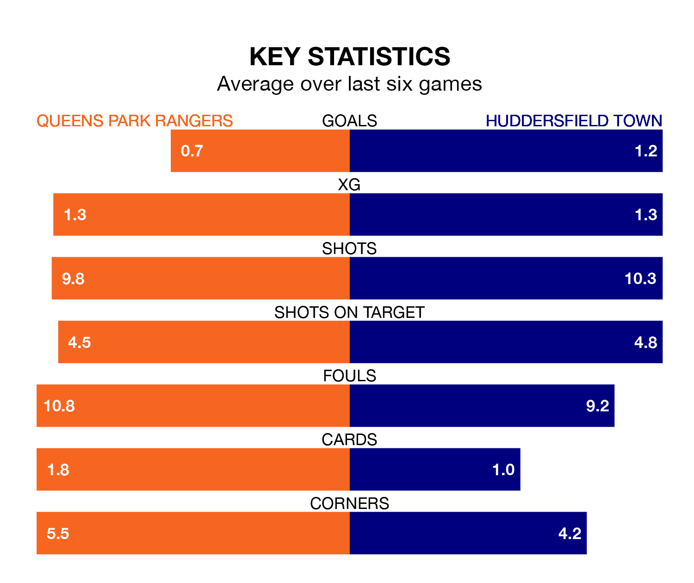

Struggling Queens Park Rangers face Huddersfield Town at Loftus Road on Sunday looking to build on a win in their last league outing.
After securing all three points with a 2-0 victory over Millwall on January 20, QPR sit 22nd in EFL Championship.
They travel to play a Huddersfield side 21st in the standings, who were held in their last match, 1-1 against Blackburn Rovers.
In the last 10 years, QPR and Huddersfield have played each other on 13 occasions. QPR won two of them, Huddersfield seven, and they drew four times.
On average, QPR scored 0.8 goals and the Terriers 1.4 in those matches.
Their last meeting was on October 21, when Huddersfield won 2-1 at home.
QPR are in bad form in EFL Championship, with one win and a draw from their last six games.
With a win and two draws over that period, Huddersfield's form is slightly better – they have taken five points from 18, compared to Rangers's four.
In Asmir Begović, the home side can rely on one of the league's safest pair of hands. He has kept eight clean sheets in his 28 appearances this season in EFL Championship.
In Town's net, Lee Nicholls has three clean sheets in 20 games. He has conceded a goal every 54 minutes, 30% more often than the 68 minutes between goals for Begović.
With 24 goals in 28 games so far this season, QPR are the league's second-lowest scorers with 0.9 goals per game. And they are conceding at an average rate, letting in 39 goals at a rate of 1.4 per game.
The Terriers are also below average scorers, with 1.0 goal per game, compared to a league average of 1.4. They have conceded 1.6 goals per game.
Updated: 09:18 (UTC), 23/01/24